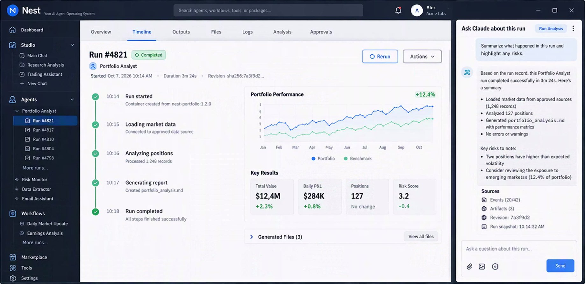
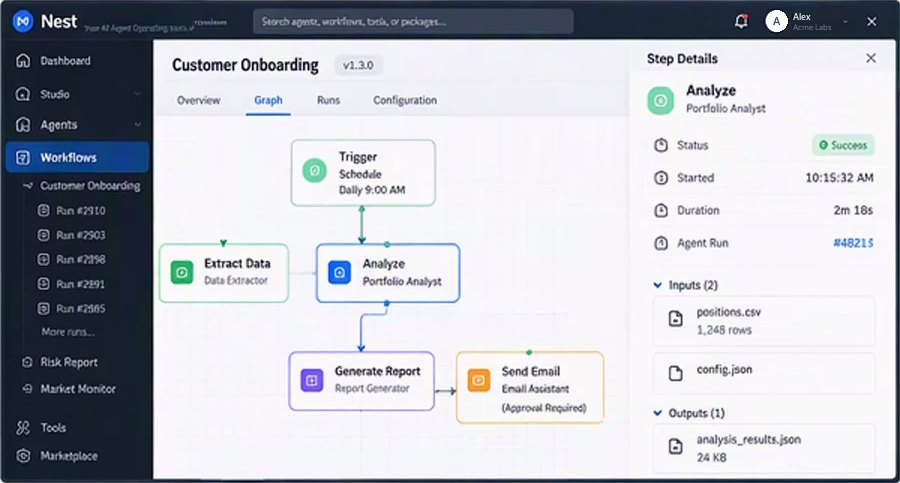
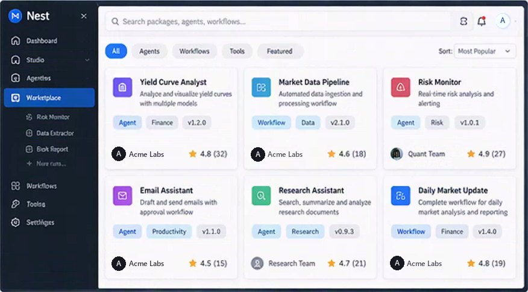
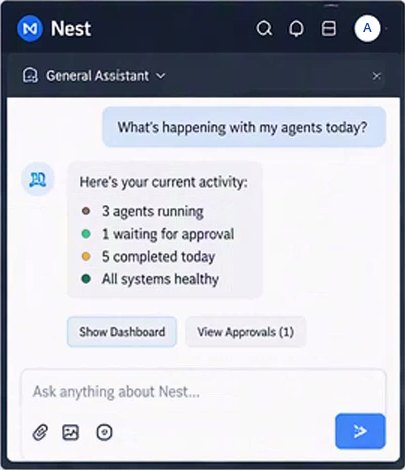
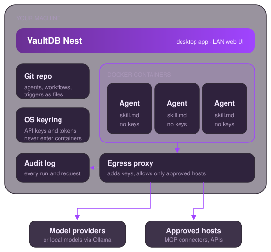

VaultDB Nest
VaultDB Nest
The agent manager for teams
Put AI agents to work across your business, safely. VaultDB Nest runs every agent in its own container, keeps a human in the loop with approvals and audit logs, and lets the agent managers on your team share agents and hand work to each other.
Desktop app for Windows, macOS, and Linux. Requires Docker.

- Local-first
- One container per agent
- Definitions in your git repo
- Keys in your OS keyring
- Full audit log

If OpenClaw is your personal agent, VaultDB Nest is your team's agent manager.*
* OpenClaw is a trademark of its respective owners. VaultDB is not affiliated with or endorsed by them.
Built for Agent Managers
An agent manager is the person responsible for a set of agents: what they may touch, what they're working on, and what they did. VaultDB Nest is built around that role, and built for teams from the ground up.
-
Safe and secure
Every agent runs in its own Docker container. It reaches only the hosts it declares and you approve, and it never sees your API keys.
-
Human in the loop
Agents pause for your approval before the actions they mark as needing it, such as running a command, and network requests, connector calls, and delegations go into an audit log.
-
Works across teams
Share agents through a private team registry, and let agents delegate tasks to a teammate's agents under trust rules each owner controls.
-
More done, less babysitting
Chain agents into workflows, start them on schedules or file changes, install ready-made agents from the Agent Hub, and supervise them all from one console.
Our goal Make every agent manager 500× more productive.
For Businesses That Run on Agents
VaultDB has always put security and data privacy first. VaultDB Nest brings the same approach to AI agents: you decide what each agent can see, reach, and do, and you keep the record.
-
Small businesses
Put agents to work on reporting, research, content, and email without a platform team. Pick ready-made agents from the Agent Hub and approve what they do.
-
Corporates
Keep agents on machines you control, with keys in the OS keyring, a host allowlist per agent, and an audit trail. Use local models through Ollama when prompts must stay in-house.
-
Heavy agent users
Run many agents side by side, each with its own job, history, and permissions, defined as files in a git repo you can diff, review, and version like code.
How it Works
An agent is a skill.md file: a prompt plus the tools, hosts, and approvals it gets.
VaultDB Nest turns that file into a running, supervised container.
-
Define
Write or install a
skill.md. It goes into your agents repo (~/.nest/repo), so you can diff, review, branch, and push it like any code. -
Run
Each agent runs in its own container with no keys and no direct network access. When it wants to run a command or send something, it asks you first.
-
Review
The Agent Console shows every agent, its status, and what needs your approval. Each run is kept in its history, and network requests are recorded in the audit log.
A Look Inside
Design previews of where the interface is headed. They use sample data, and some of what they show, such as the run chat and marketplace ratings, isn't in the current release yet.



Everything an Agent Team Needs
Agents, workflows, triggers, and connectors are plain files. The app's database is only a cache of them and can be rebuilt at any time.
-
Git-backed agent repo
Every definition is a file in a git repo you own. Moving to a new machine is a
git clone; sharing with your other machines is a push. -
Workflows
Chain agents into multi-agent pipelines. Each step hands its output to the next, and every run is recorded.
-
Triggers
Start agents and workflows on a schedule, when files change, from a webhook or a device, or when another run finishes.
-
Marketplace and registries
Install agents and packs from shared git registries. Entries declare their capabilities, publisher-signed releases show as verified, and installed agents stay read-only until you fork them. Browse the Agent Hub.
-
Connectors
Give agents outside services through MCP servers and OAuth sign-in, with tokens kept in your keyring.
-
Pilots
Let an agent see the screen and use desktop apps through host-side pilots, one capability at a time, granted per agent.
-
Your choice of models
Use local models through Ollama, or Anthropic, OpenAI, and DeepSeek with your own API keys. Each agent picks its model in its
skill.md. -
Audit logs
See what each agent sent and where. Network requests, connector calls, pilot actions, and delegations are written to audit logs on your machine, next to each agent's run history.
-
Desktop and LAN web
The same core serves the desktop window and, with
--server, a web UI on your local network, so you can check on agents from any browser.
Private by Design
Agents get exactly what you approve, and nothing else.
Agents read your files, use your accounts, and act for you. That work belongs on a machine you control, under rules you can read, with a record you keep.

-
Keys never enter containers
Provider keys and connector tokens live in your OS keyring. A proxy on the host adds them to model calls on the way out.
-
Only approved hosts
Containers reach the network only through the egress proxy, which allows the hosts an agent declares and you approved, and refuses the rest.
-
Approval before action
Anything an agent marks as needing approval, such as running a shell command, pauses until you approve or reject it in the console.
-
Scoped cloud access
AWS calls go through the proxy under a scoped STS session, limited to the services the agent declares.
-
Your records stay with you
Definitions, run history, and audit logs are kept on your machine. Nothing is sent to a VaultDB service; prompts go only to the model provider each agent uses.
New
VaultDB Nest for Teams
Your research agent can ask a teammate's reporting agent to take a task, across machines, without a central server holding your data. Teams share agents through a private GitHub repo, and a relay you can host yourself routes live delegation.
- Share an agent to your team's private registry.
- Discover what teammates share under "Shared with me".
- Delegate a task; the owner's trust rules decide, and both sides log it.
-
Agent cards
An agent declares the capabilities it serves and whether it accepts delegation, with a limit on concurrent tasks. Its card is what teammates see.
-
Self-hostable relay
nest --relayruns a small WebSocket relay for presence and task routing, so instances behind NAT can reach each other. Instances register with tokens the relay operator issues. -
Cross-user delegation
One agent asks another, on your machine or a teammate's, to handle a named capability. Calls go through the usual approval path, and each one is recorded in a delegation log.
-
Private team registries
A team is a GitHub organization with a private
nest-registryrepo. Share an agent to the team and it syncs to every member's VaultDB Nest. -
Shared with me, shared by me
See the agents your teams and the relay make available to you, and the ones you share, with how often each is called.
-
Trust graph
Decide who may call which of your agents: allow, deny, or ask. Unknown callers default to ask, and an explicit deny always wins.
Download VaultDB Nest
The latest release for your platform. VaultDB Nest requires Docker: Docker Desktop on macOS and Windows, or Docker Engine on Linux.
-
Windows
Download .msi.msiinstaller, x64. Windows 10 or 11 with the Microsoft Edge WebView2 runtime. -
Linux
Download .AppImage.AppImage, x64. A distribution with WebKitGTK 4.1, such as Ubuntu 22.04 or newer.
Docker must be installed and running before you start VaultDB Nest.
Part of the VaultDB family
VaultDB also makes an in-process database for IoT devices and model training, with VaultDB HUB for central storage and governance.
Frequently Asked Questions
An agent manager: a desktop app for running and supervising a team of AI agents, on your own or
with colleagues. Each agent runs in its own Docker container, is defined by a skill.md
file in a git repo you own, and reports back to you through the Agent Console, where you approve what
it does.
Only where you send it. An agent's prompts go to the model provider it uses, or stay on your machine with a local model through Ollama. Containers can reach only the hosts you approved, and every request is written to the audit log. Definitions, run history, and logs stay on your machine unless you push your agents repo somewhere.
Local models through Ollama, or Anthropic, OpenAI, and DeepSeek with your own API key. Each agent
picks its model in its skill.md.
Every agent runs in its own container, so a misbehaving agent can't touch your files, other agents, or your keys. Use Docker Desktop on macOS and Windows, or Docker Engine on Linux.
Into your operating system's keyring. Containers never see them: model calls go through a proxy on your machine that adds the key on the way out.
As files in a git repo in your home folder (~/.nest/repo). Push it to GitHub or any git
host to back it up or sync it to your other machines. The local database is a cache that VaultDB
Nest can rebuild from those files.
A team is a GitHub organization with a private nest-registry repository. Members sign in
with GitHub, join the team, and share agents to it. For live delegation between machines, the team
points VaultDB Nest at a relay, which anyone can host with nest --relay.
Only if you allow it. Your agent must accept delegation and serve the requested capability, and the trust graph decides who may call it: allow, deny, or ask. Callers from another machine with no rule are treated as ask.